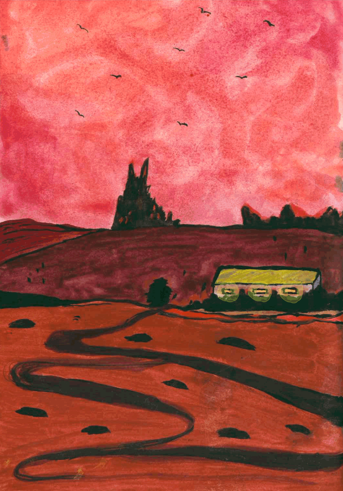
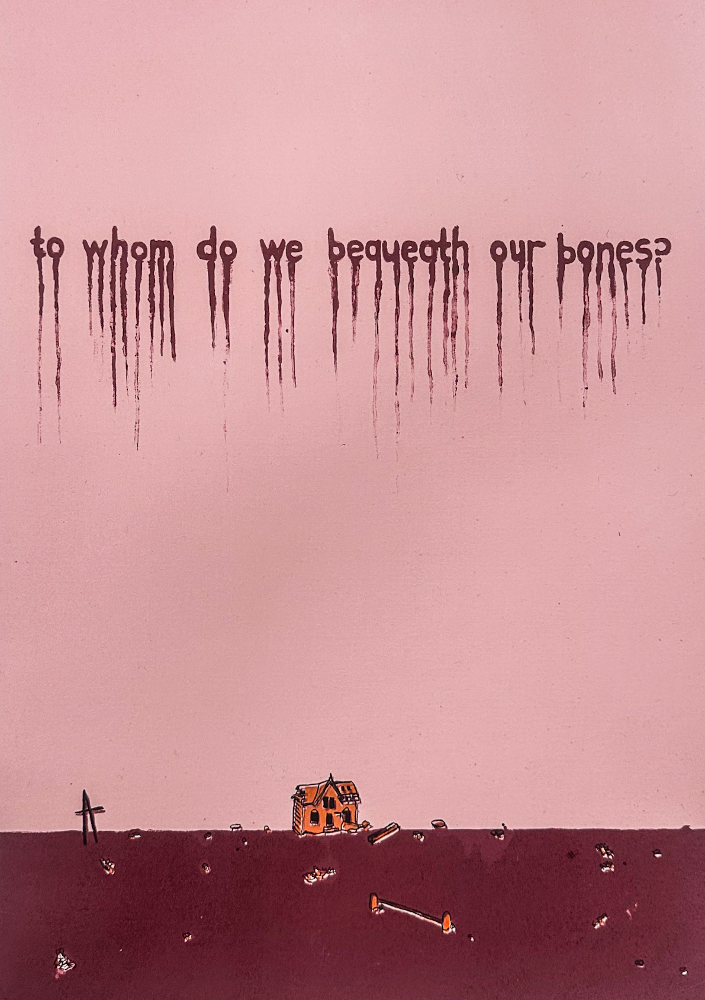

Tatenda Magaisa is an artist, writer, researcher, and cultural producer from South Africa. Her work explores themes pertaining to global cultural interaction, Black women in popular culture, as artists and/or practitioners in Africa, and the foregone conclusion of surplus labour under a culturally dominated society. Drawing strongly on prevalent visual material and assumed norms referenced from popular media and social media, her research is rooted in an exploration of art practiced under irreconcilable conditions. Magaisa works in painting, print, text, and video.

Red Land, 30 sec gif, 2024

To whom do we bequeath our bones?
Four colour Lithograph. Edition 1 of 5
50 cm × 38 cm
Year: 2023